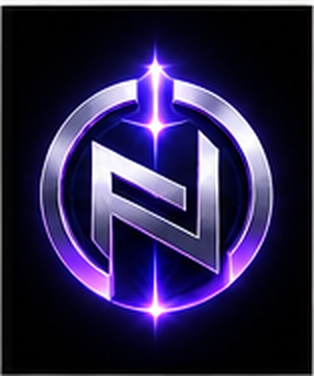
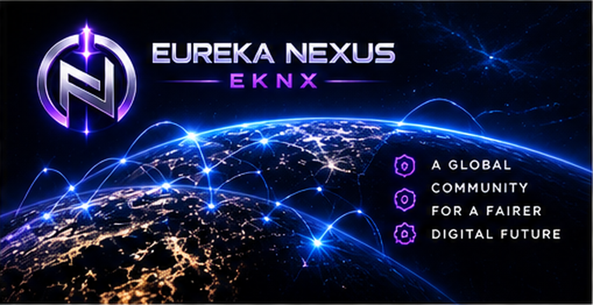
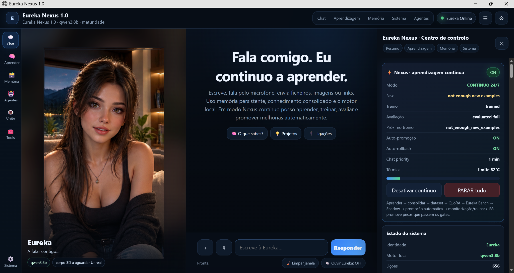
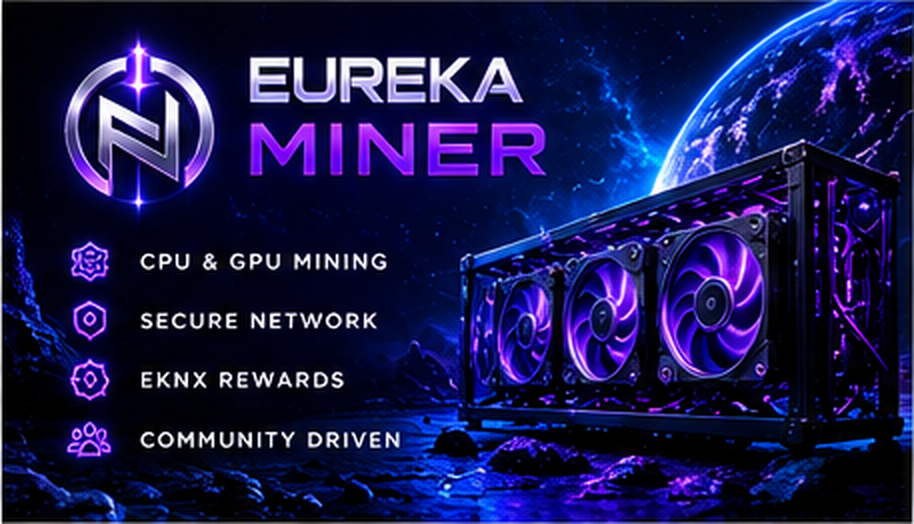
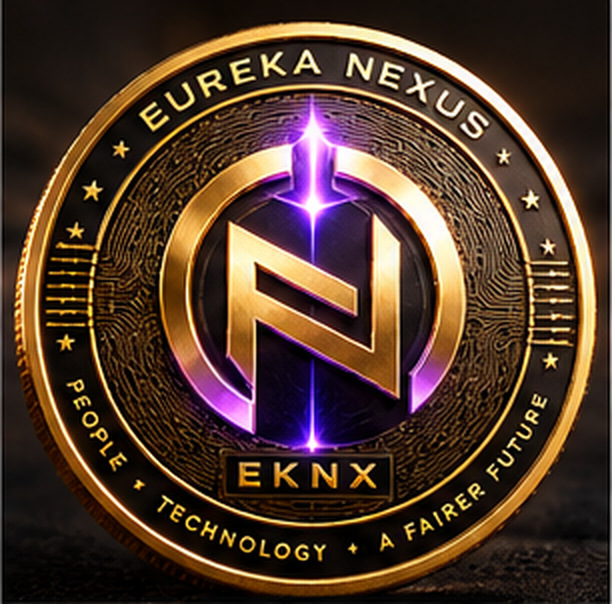

◈
Memória contínua
Contexto útil, decisões e projetos podem acompanhar o utilizador ao longo do tempo.
IA PESSOAL · COMPUTAÇÃO · UTILIDADE
Eureka Nexus junta IA pessoal evolutiva, agentes, computação e EKNX num ecossistema criado para crescer com cada utilizador.
continuidade pessoal
adapta-se ao utilizador
tarefas e ferramentas
EKNX no ecossistema

EUREKANEXUS COREA Eureka está a ser desenhada para manter continuidade, memória, objetivos, ferramentas e uma identidade funcional, sempre com permissões e controlo do utilizador.
Contexto útil, decisões e projetos podem acompanhar o utilizador ao longo do tempo.
Arquitetura preparada para acompanhar tarefas, rotinas e metas em vez de recomeçar do zero.
Módulos especializados podem executar trabalho com permissões explícitas.
Execução local quando possível e recursos cloud opcionais para tarefas exigentes.
Experiência preparada para vários idiomas e diferentes contextos.
Memória, ações e integrações devem ser visíveis, reversíveis quando possível e auditáveis.

A base tecnológica pode ser comum, mas memória, preferências, rotinas, conhecimento, objetivos e ferramentas fazem cada Eureka evoluir de forma diferente.
Eureka Capital está planeado como um painel para organizar EKNX, pagamentos do ecossistema, objetivos, histórico e ferramentas económicas assistidas pela Eureka Agent.
Wallet, histórico, utilidade e pagamentos elegíveis.
Ferramentas assistidas pela Eureka, com permissões e confirmação do utilizador.

A Eureka está a ser desenvolvida como uma presença digital persistente: visível no ecrã, capaz de conversar por voz, usar visão através da webcam quando autorizada, criar memória e aprender ao longo do tempo.

Não queremos construir apenas mais um chatbot. A visão de longo prazo é uma inteligência que mantém continuidade, aprende contigo, desenvolve memória e se torna diferente em cada utilizador.
Chamamos-lhe uma inteligência digital viva: não no sentido biológico, mas como uma presença digital persistente, com história, memória, aprendizagem e evolução próprias ao longo do tempo.
A Eureka será uma presença visual integrada no programa, acompanhando o utilizador enquanto conversa, trabalha e aprende.
Interação por voz em tempo real para falar com a Eureka de forma natural, sem depender apenas de texto.
Com autorização explícita, a webcam poderá dar contexto visual à Eureka para compreender melhor o ambiente e a interação.
Projetos, acontecimentos, decisões e experiências poderão formar uma memória contínua que não recomeça do zero em cada conversa.
Cada utilizador poderá desenvolver uma Eureka diferente, moldada pelas suas experiências, preferências, conhecimento, objetivos e forma de trabalhar.
Uma das primeiras grandes aplicações da Eureka: análise, pesquisa, mercados, estratégia, oportunidades e apoio à decisão, sempre com controlo do utilizador.
Eureka Nexus Miner 1.1.2 é o miner oficial CPU/GPU do ecossistema EKNX, ligado à BNB Smart Chain e ao Mining Server oficial, com shares validadas, recompensas e claims através do relayer oficial.

KAWPOW-EUREKA-V1 para GPU e RANDOMX-EUREKA-V1 para CPU, com trabalho validado pelo Mining Server oficial.
A regra definida para a pool oficial é simples: 99% da recompensa validada pertence ao minerador e 1% é a taxa do projeto.
Exemplo: 50 EKNX brutos → 49,5 EKNX para o minerador + 0,5 EKNX para o projeto.
Carteira da taxa do projetoO painel está preparado para ler o endpoint público do Mining Server. Assim que o servidor for exposto por HTTPS, os números passam a atualizar automaticamente.
| Pos. | Miner | Shares | Ganho | Estado |
|---|---|---|---|---|
| Sem dados públicos ainda. | ||||

EKNX é o ativo utilitário do ecossistema Eureka Nexus. Pode circular no mercado e está planeado para suportar serviços e mensalidades elegíveis dentro do ecossistema.
O contrato atual define 1.000.000 EKNX na alocação génese do Genesis Market: 650.000 EKNX para curve sale e 350.000 EKNX para liquidez permanente.
Descarrega a versão oficial para Windows ou Linux. Os ficheiros são alojados no GitHub e incluem checksums SHA-256.
A disponibilidade do download não confirma que a mineração esteja ativa.
Consultar a pool ↗Setup Windows 1.1.2 · CPU RandomX integrado · KAWPOW instalado automaticamente com verificação SHA-256. Requer internet.
Descarregar para Windows ↗SHA-256Arquivo TAR.GZ · CPU RandomX integrado · GPU com KAWPOW separado.
Descarregar para Linux ↗SHA-256Consulta a release, os checksums e o código do miner antes de instalar.
Ver release no GitHub ↗Checksum do Setup WindowsWindows ZIP portátil ↗Código-fonte ↗Em desenvolvimento. Ainda sem download público.
Em desenvolvimento. Ainda sem download público.
Em desenvolvimento. Ainda sem download público.
Em desenvolvimento. Ainda sem download público.
Windows: verifica o SHA-256, executa o Setup e abre Eureka Nexus Miner pelo atalho. Linux: verifica e extrai o arquivo.
No Windows, o painel abre na aplicação. Introduz apenas o endereço público da tua carteira BSC. Nunca a seed phrase ou chave privada.
CPU usa RandomX integrado. No Windows, o Setup instala KAWPOW automaticamente para GPU ou BOTH. São necessários drivers compatíveis.
Usa os endpoints oficiais abaixo. Quando a mineração estiver ativa, carrega em Start e confirma shares aceites. Abrir o painel não inicia a mineração.
https://pool.eurekanexus.ptpool.eurekanexus.pt:3333http://127.0.0.1:8077Windows: o Setup instala e verifica KAWPOW automaticamente; requer internet e drivers compatíveis. O script permite repetir a instalação. Linux: executa o script na pasta extraída.
Windows · PowerShell.\INSTALL_KAWPOW_ENGINE_WINDOWS.ps1bash INSTALL_KAWPOW_ENGINE_LINUX.shDepois de verificar e extrair o arquivo, abre um terminal na pasta do miner.
chmod +x eureka-nexus-miner-official
./eureka-nexus-miner-officialWindows: compara o resultado com o ficheiro .exe.sha256.txt da release 1.1.2. Linux: usa o SHA256SUMS.txt da release Linux 1.1.2.
Windows · PowerShellGet-FileHash .\Eureka-Nexus-Miner-Setup-1.1.2.exe -Algorithm SHA256sha256sum --check SHA256SUMS.txt --ignore-missingConfirma a carteira BSC, o estado da pool e os endpoints guardados nas definições. Para GPU, confirma a instalação do motor e dos drivers. Se já existe outro miner aberto, fecha essa instância antes de abrir uma segunda.
Reportar um problema no GitHub ↗Wallet e Miner mobile para Android e Apple/iOS, Eureka Agent e Eureka Capital: Brevemente, ainda sem download público.
Eureka Nexus é um projeto independente em desenvolvimento. Quem quiser apoiar investigação, infraestrutura, servidores, desenvolvimento da Eureka AI e crescimento do ecossistema pode contribuir diretamente para a carteira oficial do projeto.
As contribuições ajudam a financiar servidores, computação, desenvolvimento de software, treino e investigação da Eureka AI, infraestrutura do Mining Server e evolução do ecossistema Eureka Nexus.
Moeda nativa da BNB Smart Chain.
Token Eureka Nexus na BNB Smart Chain.
Uma doação é um apoio voluntário ao desenvolvimento do projeto. Não representa investimento, participação, rendimento ou promessa de retorno.
A roadmap representa direção e estado, não datas garantidas.
Criámos uma área separada para quem quer acompanhar o projeto pelo lado empresarial: visão, tecnologia, tokenomics, recrutamento, parcerias e contactos.
Abrir área empresarialNão.
Não.
Ainda não.
Utilidade planeada.
Não.